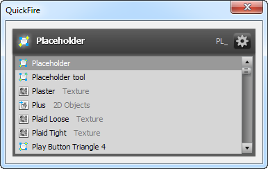

fireworks
QuickFire
QuickFire is essentially Quicksilver for Fireworks. While it's easy to add a keyboard shortcut for your most-used commands, accessing the others still requires clicking through the Commands menu. QuickFire makes accessing these commands much easier: just launch QuickFire (with a keyboard shortcut, of course), start typing part of the command's name, then hit enter to run the matched command. Quick 'n' easy. And QuickFire handles more than just commands: you can also quickly access symbols, auto shapes, textures, patterns, panels, layers, states, pages, templates, and recently-opened files.

As you type, the letters you press appear in the upper-right of the dialog and the closest match appears in the upper-left. Pressing delete will remove the last typed letter. A couple seconds after your last key press, the search times out and the best match fades from white to grey and the blinking cursor disappears; at that point, the next key you press starts a new search. This lets you easily change your search if you don't initially find what you want without having to delete everything you've typed.
Pressing enter executes the selected command and closes the dialog, while pressing escape closes the dialog without running a command. Pressing shift-enter runs the selected command but keeps QuickFire open. This lets you run several commands in a row. For instance, you might type blmo to match Blur More and then press shift-enter to apply the blur filter to the selection several times.
QuickFire doesn't yet learn your preferred abbreviations for commands, but you can press the down arrow key to select one of the matched commands that didn't make it to the top spot.
Accessing commands, symbols, and more
Besides items in the Commands menu, QuickFire also lets you quickly access:
- Command panels
- Typing a panel name like Path will open that panel and bring it to the front if it's in a group.
- Symbols
-
Any symbol files installed in the Common Library folder will be available for insertion. Typing the name of a symbol like HScrollBar and pressing enter is equivalent to dragging that symbol into your document from the Common Library panel. Different symbol types have different icons, though they all have a blue plus symbol in the upper-left.
The symbol names are followed by the name of their parent folder, in grey. This lets you distinguish between symbols with the same name that are stored in different folders, such as widget symbols in the Mac and WinXP folders.
- Auto shapes
- Auto shapes that are available in the Shapes panel (like Ruler) and those in the Toolbox panel (like Rounded Rectangle) can be inserted into the middle of the document by typing their name.
- Built-in menu commands
- Many of the standard Fireworks menu items are available in the command list. For example, the Text > Align > Right menu command is available as Text Align Right, so typing
tarwill match that command. Note that while the corresponding menu item may be disabled in the actual menu, it's still available within QuickFire. Using a menu command that is not valid for the current selection will have no effect. - Textures and patterns
-
The names of the installed textures and patterns are included in the list of commands. To apply a texture or pattern to the current selection, just type some of its name and press enter. To apply a texture to the selected element's stroke, press shift-enter.
If the selected element already has a non-zero texture opacity, then that opacity will be unchanged when you apply the new texture. Otherwise, the opacity will default to 100. Note that applying a texture to a group or to text does not work.
- Layers, States and Pages
- Pressing enter with a layer, state or page selected will navigate to the state or page, or make the layer the currrent one. There are a couple of additional options that can be used when elements are selected:
- Ctrl-M: move the selection to the entered layer, state or page
Ctrl-Shift-M: copy the selection to the entered layer, state or page
The following keyboard shortcuts are also available when a layer is matched:
Shift-Enter: select all the elements on the layer.
- Ctrl-Enter: toggle the layer between visible and hidden.
- Ctrl-Shift-Enter: toggle the layer between locked and unlocked.
- Recently-opened files and templates
-
The same recently-opened files that are listed under Files > Open Recent can be opened by typing part of a file's name and then pressing enter. The name of the file's parent folder is displayed in grey after the file name. Since all of the parent folder names end in "/", typing part of the file name followed by "/" can quickly display just the recent files that match that string.
In addition to the recently opened files, you can quickly create a new document from any of the templates saved in the Fireworks Templates directory. For example, typing
gr2should match theGrid 24.pngfile and open a new, untitled document based on that template.
Scanning the command files
The first time QuickFire runs, it scans the Fireworks Commands, Command Panels, Auto Shapes, Auto Shape Tools, Common Library, Textures, Patterns and Templates folders to build up a list of available commands. From then on, QuickFire will automatically re-scan these folders every 3 weeks when it's opened. You can also click the options menu at the top-right of the dialog and select Refresh Commands List to force QuickFire to add newly installed files.
Setting a keyboard shortcut
If you want to use a keyboard shortcut that includes the spacebar (and who doesn't?), Fireworks won't let you, sadly. But the first time QuickFire runs, it will offer to add ctrl-shift-space as its shortcut, or you can select the Add Keyboard Shortcut item in the options menu. This will duplicate your existing shortcut file and add the new shortcut. You'll then need to either restart Fireworks or manually select the new shortcut file, as there's no way to do this from an extension.
Inserting symbols
Note that there are a couple of limitations in the Fireworks API that affect how QuickFire inserts symbols. The first is that once you've added a symbol to a document, you can't add a symbol with the same name from a different folder. Doing so will just insert another instance of the first symbol instead.
The second limitation is that adding a new rich symbol to a document usually doesn't maintain the symbol's "richness". In other words, if you use QuickFire to add a Windows CheckBox rich symbol, nothing will show up in the Symbol Properties panel when you select the symbol instance. (This is not true for all of the symbols that ship with Fireworks, however. Most of the symbols in the Flex Components folder, for instance, can be inserted by QuickFire and still work with the Symbol Properties panel.)
Workarounds
There are two workarounds for this. The simplest is to first manually drag a rich symbol from the Common Library panel into your document, then use QuickFire to insert new instances of that symbol. These new instances will work correctly with the Symbol Properties panel. If there are existing instances of the symbol that you had inserted with QuickFire, select Replace existing items in the dialog that appears when you drag the symbol from the Common Library.
The second workaround is more complicated but can make a particular symbol always maintain its richness when inserted by QuickFire. First, open the symbol's PNG file. For example, open ComboBox.graphic.png in the Configuration/Common Library/Win folder. In the Document Library panel, delete the symbol. Now locate the Windows ComboBox symbol in the Common Library panel and drag it into the document. Finally, save the ComboBox.graphic.png file.
Now you should be able to insert a Windows ComboBox symbol with QuickFire without losing its interactivity and without having to first drag the symbol in manually. Unfortunately, you'll need to repeat these steps on every symbol that you want to make compatible with QuickFire.
Note to Mac users
A bug in Fireworks CS3 and CS4 caused Flash dialogs to not get keyoard focus when they're opened. This means that QuickFire is nearly useless in those versions on OS X: after you press the keyboard shortcut to open QuickFire, typing on the keyboard doesn't work until you click the mouse in the dialog to give it keyboard focus, which defeats the purpose of quick keyboard access to commands. Fortunately, this bug was fixed in CS5, so if you want to use QuickFire on a Mac, you'll need CS5 or newer.
Release history:
- 0.7.1
- 2012-07-25: Fixed a bug that caused the list to be blank if files other than PNGs had recently been opened in Fireworks.
- 0.7.0
- 2012-07-24: Added support for working with layers, states, pages, recently-opened files and templates. New icons for the various types of items. Changed textures to apply to the selection's fill on enter and to its stroke on shift-enter.
- 0.6.2
- 2012-06-07: Fixed error that occurred when refreshing the command list in Fireworks CS6. Fixed a problem that could cause QuickFire to rescan the commands list every time it's opened. Tweaked the string matching algorithm.
- 0.6.1
- 2011-08-20: Fixed a bug that prevented SWF dialogs from being closed when launched from QuickFire.
- 0.6.0
- 2011-05-17: Fixed the assignment of the keyboard shortcut on OSX. Fixed problem where the command folders would be rescanned every time QuickFire opened. Doubled the number of supported menu items. Added the ability to apply a texture or pattern to the selection.
- 0.5.0
- 2009-06-03: Further visual design tweaks. Added icons to differentiate between types of commands. Revamped how the command info is stored to avoid running into size limits for the Flash SharedObject. Offer to set a keyboard shortcut on first run.
- 0.4.0
- 2009-05-23: Revamped visual design. Changed way typed search string and matching command are displayed. Current search times out after 2 seconds.
- 0.3.0
- 2009-05-19: First public release. Added symbols and auto shapes to command list. Added option to set keyboard shortcut.
- 0.1.0
- 2007-11-17: Initial limited release.
Package contents
- QuickFire